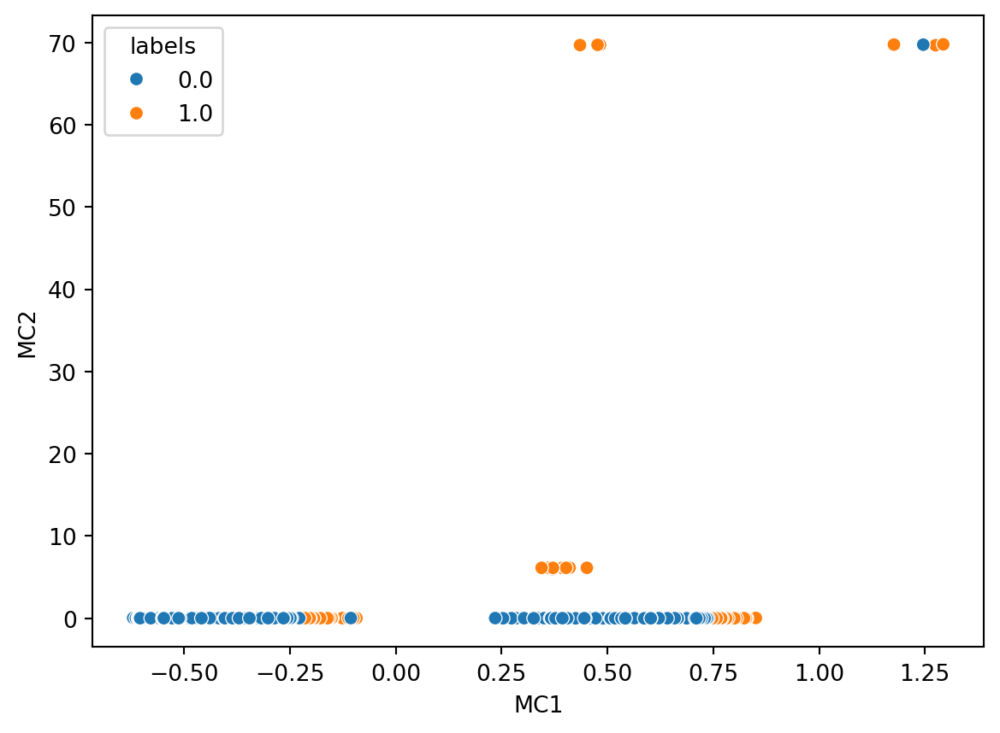
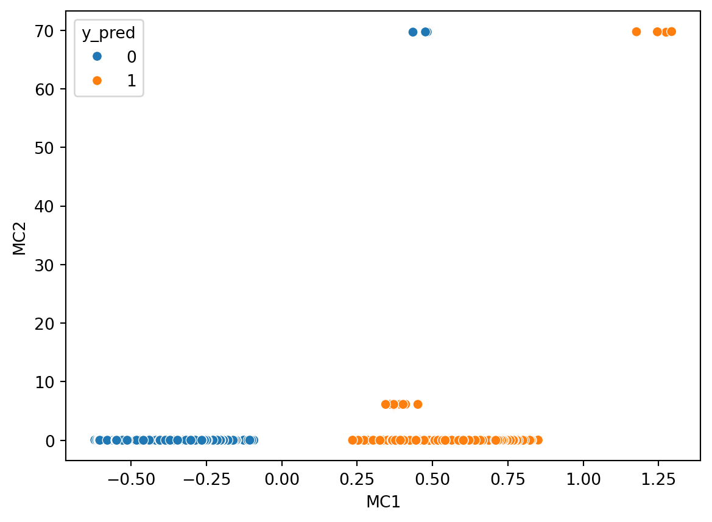

| a | b |
|---|---|
| s | f |
| m | w |
| s | s |
| s | f |
| m | f |
| m | f |
| l | w |
| l | s |
| l | f |
| m | w |
4 Multiple Correspondence Analysis
4.1 Overview
Many of the research questions within this effort are inherently linked to categorical factors in lieu of numeric factors. Principal component analysis is only executable upon numeric data and not upon categorical data - even in the case of ordinal data. As a simple example, consider a ordinal variable “size” with categories small, medium, large, and extra-large. One could apply a simple encoding and assign small=1, medium=2, large=3, and extra-large=4. This encoding, while apparently holding a degree of validity in terms of increasing size, does not match up mathematically to reality. Consider getting a fountain drink at a fast-food restaurant and ask the question - is a large the same as 3 smalls? Is an extra large the same as 1 medium and two smalls? Rarely are either of these answers “yes”. One might have to add decimal places to the categories, and at that point, one may as well get the exact size measurements in terms of fluid ounces or liters, which may or may not be possible.
The additive and multiplicative challenges between these categories when assigning them a value produces challenges for ordinal variables. These challenges are further confounded when pivoting away from an ordinal variables. One runs the risk of making mathematical claims such as red is 4 times blue, or that sad is 3 less than happy. Such statements are nonsensical, have no foundation in mathematics, and while they may produce results in a model post-transformation, do not hold validity, explainability, or generalizability.
Enter Multiple Correspondence Analysis (or MCA). MCA performs an analogous action on categorical variables as PCA performs upon numeric variables. To perform an MCA, one must construct a Complete Disjunctive Table, which is effectively a one-hot encoded matrix. One takes the source categorical columns and transforms them to a column per category, and for the new column, the value is set to 1 if the current row is a member of the category, and zero otherwise. This is repeated for all columns and categories until the dataset is fully expanded.
Taking the above example table, one can transform it to a one-hot encoded table:
| a_l | a_m | a_s | b_f | b_s | b_w |
|---|---|---|---|---|---|
| 0 | 0 | 1 | 1 | 0 | 0 |
| 0 | 1 | 0 | 0 | 0 | 1 |
| 0 | 0 | 1 | 0 | 1 | 0 |
| 0 | 0 | 1 | 1 | 0 | 0 |
| 0 | 1 | 0 | 1 | 0 | 0 |
| 0 | 1 | 0 | 1 | 0 | 0 |
| 1 | 0 | 0 | 0 | 0 | 1 |
| 1 | 0 | 0 | 0 | 1 | 0 |
| 1 | 0 | 0 | 1 | 0 | 0 |
| 0 | 1 | 0 | 0 | 0 | 1 |
Notice that there are now have 6 columns from the original 2 columns. This is because column ‘a’ had 3 categories - s/m/l, as did column ‘b’ - s/w/f. A column is created for each combination of individual columns and their respective categories, hence 6 columns in this case.
After performing this transformation, the following mathematical operations are applied:
Calculate the sum of all values (0s and 1s) from the CDT as value \(N\)
Calculate matrix \(Z = \frac{CDT}{N}\)
| 0 | 1 | 2 | 3 | 4 | 5 | |
|---|---|---|---|---|---|---|
| 0 | 0.00 | 0.00 | 0.05 | 0.05 | 0.00 | 0.00 |
| 1 | 0.00 | 0.05 | 0.00 | 0.00 | 0.00 | 0.05 |
| 2 | 0.00 | 0.00 | 0.05 | 0.00 | 0.05 | 0.00 |
| 3 | 0.00 | 0.00 | 0.05 | 0.05 | 0.00 | 0.00 |
| 4 | 0.00 | 0.05 | 0.00 | 0.05 | 0.00 | 0.00 |
| 5 | 0.00 | 0.05 | 0.00 | 0.05 | 0.00 | 0.00 |
| 6 | 0.05 | 0.00 | 0.00 | 0.00 | 0.00 | 0.05 |
| 7 | 0.05 | 0.00 | 0.00 | 0.00 | 0.05 | 0.00 |
| 8 | 0.05 | 0.00 | 0.00 | 0.05 | 0.00 | 0.00 |
| 9 | 0.00 | 0.05 | 0.00 | 0.00 | 0.00 | 0.05 |
- Calculate the column-wise sum as matrix \(c\). Transform to a diagonal matrix \(D_c\)
c:
Dc:| 0 | 1 | 2 | 3 | 4 | 5 | |
|---|---|---|---|---|---|---|
| 0 | 0.15 | 0.2 | 0.15 | 0.25 | 0.1 | 0.15 |
| 0 | 1 | 2 | 3 | 4 | 5 | |
|---|---|---|---|---|---|---|
| 0 | 0.15 | 0.0 | 0.00 | 0.00 | 0.0 | 0.00 |
| 1 | 0.00 | 0.2 | 0.00 | 0.00 | 0.0 | 0.00 |
| 2 | 0.00 | 0.0 | 0.15 | 0.00 | 0.0 | 0.00 |
| 3 | 0.00 | 0.0 | 0.00 | 0.25 | 0.0 | 0.00 |
| 4 | 0.00 | 0.0 | 0.00 | 0.00 | 0.1 | 0.00 |
| 5 | 0.00 | 0.0 | 0.00 | 0.00 | 0.0 | 0.15 |
- Calculate the row-wise sum as matrix \(r\). Transform to a diagonal matrix \(D_r\)
r:
Dr:| 0 | |
|---|---|
| 0 | 0.1 |
| 1 | 0.1 |
| 2 | 0.1 |
| 3 | 0.1 |
| 4 | 0.1 |
| 5 | 0.1 |
| 6 | 0.1 |
| 7 | 0.1 |
| 8 | 0.1 |
| 9 | 0.1 |
| 0 | 1 | 2 | 3 | 4 | 5 | 6 | 7 | 8 | 9 | |
|---|---|---|---|---|---|---|---|---|---|---|
| 0 | 0.1 | 0.0 | 0.0 | 0.0 | 0.0 | 0.0 | 0.0 | 0.0 | 0.0 | 0.0 |
| 1 | 0.0 | 0.1 | 0.0 | 0.0 | 0.0 | 0.0 | 0.0 | 0.0 | 0.0 | 0.0 |
| 2 | 0.0 | 0.0 | 0.1 | 0.0 | 0.0 | 0.0 | 0.0 | 0.0 | 0.0 | 0.0 |
| 3 | 0.0 | 0.0 | 0.0 | 0.1 | 0.0 | 0.0 | 0.0 | 0.0 | 0.0 | 0.0 |
| 4 | 0.0 | 0.0 | 0.0 | 0.0 | 0.1 | 0.0 | 0.0 | 0.0 | 0.0 | 0.0 |
| 5 | 0.0 | 0.0 | 0.0 | 0.0 | 0.0 | 0.1 | 0.0 | 0.0 | 0.0 | 0.0 |
| 6 | 0.0 | 0.0 | 0.0 | 0.0 | 0.0 | 0.0 | 0.1 | 0.0 | 0.0 | 0.0 |
| 7 | 0.0 | 0.0 | 0.0 | 0.0 | 0.0 | 0.0 | 0.0 | 0.1 | 0.0 | 0.0 |
| 8 | 0.0 | 0.0 | 0.0 | 0.0 | 0.0 | 0.0 | 0.0 | 0.0 | 0.1 | 0.0 |
| 9 | 0.0 | 0.0 | 0.0 | 0.0 | 0.0 | 0.0 | 0.0 | 0.0 | 0.0 | 0.1 |
- Calculate matrix \(M = D_r^{-\frac{1}{2}}(Z-rc^T)D_c^{-\frac{1}{2}}\)
| 0 | 1 | 2 | 3 | 4 | 5 | |
|---|---|---|---|---|---|---|
| 0 | -0.122474 | -0.141421 | 0.285774 | 0.158114 | -0.1 | -0.122474 |
| 1 | -0.122474 | 0.212132 | -0.122474 | -0.158114 | -0.1 | 0.285774 |
| 2 | -0.122474 | -0.141421 | 0.285774 | -0.158114 | 0.4 | -0.122474 |
| 3 | -0.122474 | -0.141421 | 0.285774 | 0.158114 | -0.1 | -0.122474 |
| 4 | -0.122474 | 0.212132 | -0.122474 | 0.158114 | -0.1 | -0.122474 |
| 5 | -0.122474 | 0.212132 | -0.122474 | 0.158114 | -0.1 | -0.122474 |
| 6 | 0.285774 | -0.141421 | -0.122474 | -0.158114 | -0.1 | 0.285774 |
| 7 | 0.285774 | -0.141421 | -0.122474 | -0.158114 | 0.4 | -0.122474 |
| 8 | 0.285774 | -0.141421 | -0.122474 | 0.158114 | -0.1 | -0.122474 |
| 9 | -0.122474 | 0.212132 | -0.122474 | -0.158114 | -0.1 | 0.285774 |
Perform Matrix decomposition on \(M\):
seek two unitary matrices (e.g. of total length 1), P and Q, and the generalized diagonal matrix of singular values \(\Delta\) such that \(M=P\Delta Q^T\)
P:
Q:| 0 | 1 | 2 | 3 | 4 | 5 | |
|---|---|---|---|---|---|---|
| 0 | 0.266849 | -0.369737 | -0.029655 | -0.335052 | 0.407906 | 0.052569 |
| 1 | -0.448558 | 0.052436 | 0.315562 | -0.066040 | -0.618981 | 0.175176 |
| 2 | 0.502221 | 0.093666 | 0.563688 | 0.073941 | -0.177477 | -0.434748 |
| 3 | 0.266849 | -0.369737 | -0.029655 | -0.335052 | -0.448932 | -0.204336 |
| 4 | -0.168262 | -0.293458 | -0.127323 | 0.421015 | -0.002788 | -0.406828 |
| 5 | -0.168262 | -0.293458 | -0.127323 | 0.421015 | -0.002788 | -0.406828 |
| 6 | -0.199414 | 0.452079 | -0.196143 | -0.498964 | 0.067258 | -0.618150 |
| 7 | 0.316254 | 0.569588 | -0.045685 | 0.397085 | 0.031808 | 0.043738 |
| 8 | 0.080882 | 0.106185 | -0.639028 | -0.011908 | -0.317570 | -0.012104 |
| 9 | -0.448558 | 0.052436 | 0.315562 | -0.066040 | 0.333219 | -0.143542 |
| 0 | 1 | 2 | 3 | 4 | 5 | |
|---|---|---|---|---|---|---|
| 0 | 0.093132 | -0.503227 | 0.487944 | 0.101450 | 0.472167 | -0.516494 |
| 1 | 0.584231 | -0.216247 | -0.334531 | -0.489600 | 0.420783 | 0.288503 |
| 2 | -0.584231 | 0.216247 | 0.334531 | -0.489600 | 0.420783 | 0.288503 |
| 3 | -0.093132 | 0.503227 | -0.487944 | 0.101450 | 0.472167 | -0.516494 |
| 4 | 0.545100 | 0.629428 | 0.545100 | -0.069109 | -0.043709 | -0.053532 |
| 5 | 0.053532 | 0.061813 | 0.053532 | 0.703721 | 0.445073 | 0.545100 |
- \(\Delta^2\) provides the eigenvalues of the target matrix.
| 0 | |
|---|---|
| 0 | 7.512071e-01 |
| 1 | 6.211313e-01 |
| 2 | 3.788687e-01 |
| 3 | 2.487929e-01 |
| 4 | 1.954416e-32 |
| 5 | 3.228308e-33 |
- Use the eigenvalues to apply transformations of the input data into a new the new eigenbasis.
To maximize the use of variables within the dataset and to support the answering of various research questions, performing MCA on transformations of the data is necessary.
4.2 Data & Code
The data used the source data for this effort, converted into a one-hot encoded / sparse matrix format of the data. The code and applied transformations can be seen in Appendix G.
The completed transformed data has two forms. One of these forms is a transformation that includes all protected class variables (age, gender, and race), and the second form does not contain these variables. These two different forms allow exploration of the research questions for this effort.
(add notes on how numerics were converted to categories).
4.3 Results
| eigenvalue | % of variance | % of variance (cumulative) | |
|---|---|---|---|
| 0 | 0.215 | 4.69% | 4.69% |
| 1 | 0.167 | 3.63% | 8.32% |
| 2 | 0.166 | 3.62% | 11.93% |
| 3 | 0.115 | 2.49% | 14.43% |
| 4 | 0.102 | 2.21% | 16.64% |
| eigenvalue | % of variance | % of variance (cumulative) | |
|---|---|---|---|
| 176 | 0.001 | 0.02% | 99.96% |
| 177 | 0.001 | 0.01% | 99.97% |
| 178 | 0.000 | 0.01% | 99.98% |
| 179 | 0.000 | 0.01% | 99.99% |
| 180 | 0.000 | 0.01% | 100.00% |
| eigenvalue | % of variance | % of variance (cumulative) | |
|---|---|---|---|
| 0 | 0.124 | 3.21% | 3.21% |
| 1 | 0.116 | 3.01% | 6.23% |
| 2 | 0.100 | 2.61% | 8.83% |
| 3 | 0.086 | 2.23% | 11.06% |
| 4 | 0.085 | 2.22% | 13.28% |
| eigenvalue | % of variance | % of variance (cumulative) | |
|---|---|---|---|
| 95 | 0.009 | 0.24% | 99.52% |
| 96 | 0.007 | 0.17% | 99.69% |
| 97 | 0.007 | 0.17% | 99.86% |
| 98 | 0.004 | 0.11% | 99.97% |
| 99 | 0.001 | 0.03% | 100.00% |
MCA doesn’t necessarily provide direct dimensionality reduction, but does enable one to reduce dimensions from a sparse matrix. Instead it enables use of more variables while also (potentially) increasing the data’s dimensionality. The sparse matrices to produce the transformations had 243 columns (with protected) and 179 columns (without protected).
The outcomes of the transformations allow substantial dimensionality reduction from these sparse matrices. With 181 components, the data containing protected class information achieved (99.99%) explained variance in the source data (reduction of 62 features). Similarly, with 100 components, the data excluding protected class information achieved 99.99% explained variance (reduction of 79 features).
MCA also provides us with insight as to which columns provide the greatest contributions to each primary component in the output data. Exploring some of these provides interesting insights. To explore these, we’ll look at the first 3 components, sorted in descending order, and examine which columns from the source data provide the strongest contributions to the transformation:
4.3.1 With Protected Classes
| Column | MC1 | |
|---|---|---|
| 121 | co-applicant_sex_observed_2 | 0.061418 |
| 96 | co-applicant_ethnicity_observed_2 | 0.061381 |
| 103 | co-applicant_race_observed_2 | 0.061369 |
| 1 | derived_sex_Joint | 0.053307 |
| 90 | co-applicant_credit_score_type_9 | 0.047954 |
| 229 | co-applicant_ethnicity_Not Hispanic/Latino | 0.046580 |
| 98 | co-applicant_ethnicity_observed_4 | 0.045165 |
| 140 | co-applicant_age_8.0 | 0.045165 |
| 105 | co-applicant_race_observed_4 | 0.045165 |
| 123 | co-applicant_sex_observed_4 | 0.045165 |
| Column | MC2 | |
|---|---|---|
| 196 | applicant_race_Not Applicable | 0.141186 |
| 131 | applicant_age_7.0 | 0.141186 |
| 109 | applicant_sex_4 | 0.141186 |
| 101 | applicant_race_observed_3 | 0.141186 |
| 94 | applicant_ethnicity_observed_3 | 0.141186 |
| 119 | applicant_sex_observed_3 | 0.141186 |
| 223 | applicant_ethnicity_Not Applicable | 0.141186 |
| 231 | co-applicant_ethnicity_Not Applicable | 0.001395 |
| 214 | co-applicant_race_Not Applicable | 0.001395 |
| 139 | co-applicant_age_7.0 | 0.001395 |
| Column | MC3 | |
|---|---|---|
| 231 | co-applicant_ethnicity_Not Applicable | 0.141338 |
| 214 | co-applicant_race_Not Applicable | 0.141338 |
| 139 | co-applicant_age_7.0 | 0.141338 |
| 122 | co-applicant_sex_observed_3 | 0.141338 |
| 114 | co-applicant_sex_4 | 0.141338 |
| 104 | co-applicant_race_observed_3 | 0.141338 |
| 97 | co-applicant_ethnicity_observed_3 | 0.141338 |
| 119 | applicant_sex_observed_3 | 0.001412 |
| 223 | applicant_ethnicity_Not Applicable | 0.001412 |
| 94 | applicant_ethnicity_observed_3 | 0.001412 |
Examining the above three tables, it is evident that features revolving around protected class information contribute substantially to each Multiple Correspondence Component (MC). For each of the MCs, much of the contributions come from feature values revolving around all protected classes of age, sex, race, and ethnicity. Using data of this nature could easily produce predictive outcomes of models trained with with biases (either for or against) testing data that fits within these categories.
4.3.2 Without Protected Classes
| Column | MC1 | |
|---|---|---|
| 29 | origination_charges_H | 0.088933 |
| 25 | total_loan_costs_H | 0.084998 |
| 32 | discount_points_H | 0.076381 |
| 14 | loan_amount_ML | 0.054607 |
| 27 | total_loan_costs_MH | 0.049097 |
| 31 | origination_charges_MH | 0.047695 |
| 50 | property_value_ML | 0.043231 |
| 34 | discount_points_MH | 0.033078 |
| 0 | purchaser_type_0 | 0.032864 |
| 9 | open-end_line_of_credit_1 | 0.030098 |
| Column | MC2 | |
|---|---|---|
| 47 | property_value_H | 0.078352 |
| 11 | loan_amount_H | 0.075937 |
| 81 | applicant_credit_score_type_9 | 0.062141 |
| 56 | income_MH | 0.051055 |
| 0 | purchaser_type_0 | 0.051019 |
| 44 | intro_rate_period_H | 0.042191 |
| 121 | company_Bank of America | 0.040706 |
| 9 | open-end_line_of_credit_1 | 0.034975 |
| 124 | company_Rocket Mortgage | 0.034505 |
| 49 | property_value_MH | 0.031335 |
| Column | MC3 | |
|---|---|---|
| 107 | tract_owner_occupied_units_H | 0.089676 |
| 112 | tract_one_to_four_family_homes_H | 0.080570 |
| 111 | tract_owner_occupied_units_ML | 0.077914 |
| 88 | tract_population_H | 0.073417 |
| 115 | tract_one_to_four_family_homes_MH | 0.056009 |
| 110 | tract_owner_occupied_units_MH | 0.051876 |
| 116 | tract_one_to_four_family_homes_ML | 0.049923 |
| 106 | tract_to_msa_income_percentage_ML | 0.044282 |
| 92 | tract_population_ML | 0.037601 |
| 91 | tract_population_MH | 0.037590 |
Examining the MCs for data that exludes protected class information, we immediately see that each holds data that is likely highly relevant to making a decision of whether or not to approve a loan. The _H and _MH in MC1 column contributions signify that the loan is between 1 and 2 standard deviations, or over 2 standard deviations from the mean. With high loan costs, high origination charges, high discount points and so forth all are likely candidates to impact the decision making process of whether or not to grant a loan.
It’s also interesting to see that in MC2, two banks stand out - Bank of America and Rocket Mortgage, apparently having a higher influence on the loan outcome in the 2nd MC.
4.3.3 Clustering

